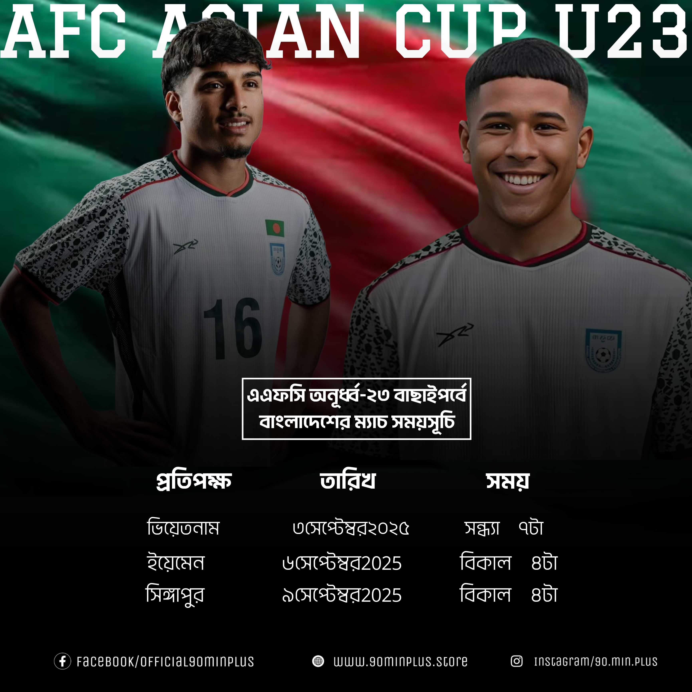

Bangladesh U23 Set to Compete in AFC U23 Asian Cup Qualifiers – Facing Vietnam, Yemen, and Singapore This September

The Bangladesh U23 national football team is gearing up for one of its most important challenges yet — the AFC U23 Asian Cup 2025 Qualifiers, scheduled to be held in September 2025. The Young Tigers have been drawn into Group D, where they will face tough opponents: Vietnam, Yemen, and Singapore.
All matches in Group D will be hosted by Vietnam, giving the hosts a potential advantage with familiar conditions and home crowd support. However, the Bangladesh Football Federation (BFF) remains confident that the U23 team is well-prepared and motivated for the challenge.
Group D Opponents:
- Vietnam (Host)
- Yemen
- Singapore
- Bangladesh
Match Fixtures (Tentative):
- Bangladesh vs Vietnam – 3 September 2025
- Bangladesh vs Yemen – 6 September 2025
- Bangladesh vs Singapore – 9 September 2025
The matches will be crucial, as only the group winners and top four runners-up across all groups will qualify for the final tournament. The final round of the AFC U23 Asian Cup will be held in Qatar, and will also serve as part of the qualification path for the 2026 Summer Olympics.
Under the leadership of head coach Saifur Rahman Moni, Bangladesh U23 is already undergoing an intensive training camp in Dhaka. The squad is expected to include promising talents such as Mehedi Hasan (captain), Mahbubur Rahman Sufil, and Arman Hossain.
Coach Moni commented: “We know this is a challenging group. Vietnam is a very strong side, Yemen is unpredictable, and Singapore has improved a lot. But our boys are determined. We’ll go in with confidence and fight for every point.”
Group Rivals Overview:
Vietnam üáªüá≥: Consistently among the top U23 teams in Southeast Asia. They reached the final of the 2018 edition and are favorites to top the group, especially on home turf.
Yemen üáæüá™: A physical and passionate team. Though inconsistent, they can surprise stronger teams with their aggressive style of play.
Singapore üá∏üá¨: Rebuilding phase with a focus on youth development. Technically sound and tactically disciplined, they will be a competitive side.
Fans across Bangladesh are already showing support on social media with hashtags like #U23Tigers and #RoadToAFC2025. The excitement is building as the team prepares to fly the national flag on the continental stage.
The AFC U23 Asian Cup 2025 qualifiers present a massive opportunity for Bangladesh's youth football development. With strong preparation and unity, the Young Tigers hope to make history by qualifying for the main tournament in Qatar.
Stay tuned to 90'+ for all updates, match reports, player interviews, and exclusive coverage of Bangladesh U23’s AFC campaign.